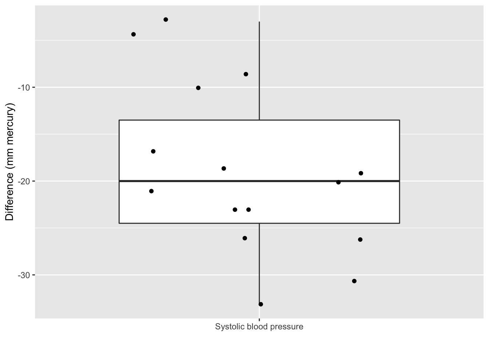

In this exercise, we will see some basics in hypothesis testing and more specifically on t-tests. As an example, we will work with the captopril dataset that we already explored in the exercise on data exploration.
The goal is to answer these two research questions;
Is the average systolic blood pressure before captopril treatment (SBPb) higher than 149 mmHg?
Is the average SBP before captopril treatment significantly different from the average SBP after captopril treatment?
First, load the required R libraries:
Import the data
(captopril <- read.table("https://raw.githubusercontent.com/statOmics/PSLS21/data/captopril.txt",
header = TRUE,
sep = ","))
Data exploration
Before we start delving into the data in order to solve our research hypothese, it is always a good idea to first have a look at the data. Our dataset looks like this;
We have 15 patients, for which we have measure the systolic blood pressure and diastolyic blood pressure, before and after treatment with the captopril drug.
Note that the dataset is not in the tidy format. We could tidy the data using the following code.
captopril %>%
gather(type,bp,-id) %>%
filter(type%in%c("SBPa","SBPb")) %>%
mutate(id = as.factor(id))
# we are only interested in the systolic blood pressure
We can visualize the entire dataframe in an informative way with boxplots;
captopril %>%
gather(type,bp,-id) %>%
filter(type%in%c("SBPa","SBPb")) %>%
ggplot(aes(x=type, y=bp, fill=type)) +
scale_fill_brewer(palette="RdGy") +
theme_bw() +
geom_boxplot(outlier.shape=NA) +
geom_jitter(width = 0.2) +
ggtitle("Boxplot of blood pressure measures before and after treatment") +
ylab("blood pressure (mmHg)") +
stat_summary(fun=mean, geom="point", shape=5, size=3, color="black", fill="black")
Clearly, it seems that on average the measurements after treatment are lower than those before treatment. But is this difference significant? To answer this question, we will need to perform hypothesis tests. Let’s start of with question 1.
Question 1
Is the average systolic blood pressure (SBP) before captopril treatment higher than 149 mmHg?
In the data exploration of the NHANES dataset we have set up a reference interval, i.e. an interval that is expected to hold 95% of the SBP values of healthy individuals. We found the interval of [93;149] mmHg. (If you did not get to this point of the script yet, don’t worry!).
To test the effect of the captopril on subjects with hypertension (patients), we need to find a group of patients that have elevated SBP levels, higher than 149 mmHg.Therefore, we want to test whether the patients in the captopril study indeed have on average a SBP level that is greater than 149 mmHg. We can assess this research hypothesis using a one sample t-test.
Assess the assumptions
Before we can perform a t-test, we must check that the required assumptions are met!
- The observations are independent of each other
- The data (SBPb) must be normally distributed
For the first assumption requires us to think about the data. Are there any underlying correlation structures (that we know of) in the data? For instance, if all the 15 subjects are members of the same family, we expect that the data will give us a good representation of the underlying population of interest, i.e., all past, present and future patients with elevated SBP levels.
In this dataset, we have no reason to believe that this assumption was violated; we may we have assume 15 unrelated, “random” patients with elevated SBP levels.
We can assess the second assumption with a quantile-quantile plot.
captopril %>%
ggplot(aes(sample=SBPb)) +
geom_qq() +
geom_qq_line()
We can see that all of the data lies nicely around the quantile-quantile line (black line). As such, we may conclude that our data is normally distributed.
Hypothesis test
Here, we will test if mean SBPb is significantly higher than 149 mmHg.More specifically, we will test the null hypothesis;
\(H0:\) the mean SBPb is equal to 149 mmHg
versus the alternative hypothesis;
\(HA:\) the mean SBPb is greater than 149 mmHg
output1 <- t.test(captopril$SBPb,
mu=149,
alternative = "greater",
conf.level = 0.95)
output1
##
## One Sample t-test
##
## data: captopril$SBPb
## t = 5.2606, df = 14, p-value = 6.025e-05
## alternative hypothesis: true mean is greater than 149
## 95 percent confidence interval:
## 167.581 Inf
## sample estimates:
## mean of x
## 176.9333
Conclusion
When writing a conclusion on your research hypothesis, it is very important to be precise, concise, and complete.
An example of such a conclusion for our research question is given below:
The mean SBP of patients before treatment with captopril is significantly higher (p=610^{-5}) than the upper bound of the reference interval (147 mmHg) on the 5% signifcance level. The mean SBPb equals 176.93 mmHg with a 95% confidence interval of [167.58, ]).
As we have seen in the theory class, the 95% confidence interval can be interpreted as;
With 95% confidence we can state that the interval [167.58, ] contains the true average of SBP of diseased patient before treatment with captopril.
Question 2
Is the average SBP before captopril treatment different from the average SBP after captopril treatment?
As the data is paired, there will be a strong correlation between the BP values before and after treatment of each individual patient. We can show this with a scatterplot.
captopril %>%
ggplot(aes(x=SBPb,y=SBPa)) +
geom_point() +
ggtitle("correlation between SBPb and SBPa") +
ylab("SBPa (mmHg)") +
xlab("SBPb (mmHg)")

We clearly see that if a patient’s SBPb value is high, its SBPa value will be comparatively high as well.
Check the assumptions
The paired t-test has 2 assumptions:
The observations are independent of each other (in both groups)
The data (SBPb and SBPa) must be normally distributed (in both groups)
Additionally, we must check if the variances are similar for both groups. If so, we can use a t-test with a pooled variance (see theory). If not, we must rely on the Welch t-test, which can deal with unequal variances.
The first assumption is met given the experimental design.
Secondly, we assess if the data are normally distributed.
captopril %>%
ggplot(aes(sample=SBPa)) +
geom_qq() +
geom_qq_line()
captopril %>%
ggplot(aes(sample=SBPb)) +
geom_qq() +
geom_qq_line()

We can see that all of the data lies nicely around the quantile-quantile line. As such, we may conclude that our data is normally distributed.
For the third assumption, we must compare the within-group variability of both groups. We can do this visually with boxplots.
captopril %>%
select(SBPb,SBPa) %>%
gather(type,bp) %>%
ggplot(aes(x=type,y=bp,fill=type)) +
scale_fill_brewer(palette="RdGy") +
theme_bw() +
geom_boxplot(outlier.shape=NA) +
geom_jitter(width = 0.2) +
ggtitle("Boxplot of different blood pressure measures") +
ylab("blood pressure (mmHg)") + stat_summary(fun.y=mean, geom="point", shape=5, size=3, color="black", fill="black")
## Warning: `fun.y` is deprecated. Use `fun` instead.

As a measure of variability, we may take the height of each boxplot’s box. This is the interval between the 25% and 75% quantile. Here we can see that this interval, as well as the length of the whiskers, is approximately equal for both groups. When the sample sizes are small (as is the case here, we speak about deviation from equality if one height is more than 2 or 3 times larger/smaller than that of the other group.
As all three assumptions are met we may continue with performing the unpaired two-sample t-test.
Hypothesis test
As such, we will now perform a paired t-test.
output2 <- t.test(captopril$SBPb, captopril$SBPa, paired = TRUE)
output2
##
## Paired t-test
##
## data: captopril$SBPb and captopril$SBPa
## t = 8.1228, df = 14, p-value = 1.146e-06
## alternative hypothesis: true difference in means is not equal to 0
## 95 percent confidence interval:
## 13.93409 23.93258
## sample estimates:
## mean of the differences
## 18.93333
Clearly, by correctly stating that the data is paired, we have gained a lot of statistical power for rejecting the null hypothesis that the true differenc in means is equal to 0. The p-value (p = 0) has now become extremely significant. Note that the 95% CI has become narrower!
Conclusion
We may conclude that, on the 5% significance level, the mean SBP levels of patients before captopril treatment is extremely significantly (p = 0) higher than the mean SBP levels of patients after captopril treatment. The SBP levels are on average 18.93 mmHg higher before treatment than after treatment (95% CI [13.93, 23.93]).
Alternative solution: One-sample t-test on the difference
On final thing; performing a paired two-sample t-test is analogous to performing a one-sample t-test on the difference between both groups.
This can be easily seen from the output of the paired two-sample t-test. The alternative hypothesis \(HA\) there states that the “true difference in means is not equal to 0”. So internally, R will actually perform a one-sample t-test on the difference, and check whether or not the true mean difference is equal to 0. We can also set this up manually.
bp_diff <- captopril %>%
mutate(bp_diff = SBPb-SBPa) %>%
select(bp_diff)
t.test(bp_diff,mu=0)
##
## One Sample t-test
##
## data: bp_diff
## t = 8.1228, df = 14, p-value = 1.146e-06
## alternative hypothesis: true mean is not equal to 0
## 95 percent confidence interval:
## 13.93409 23.93258
## sample estimates:
## mean of x
## 18.93333
Indeed, the output is equivalent to that of the paired two-sample t-test.
LS0tCnRpdGxlOiAiRXhlcmNpc2UgNS4xOiBIeXBvdGhlc2lzIHRlc3Rpbmcgb24gdGhlIGNhcHRvcHJpbCBkYXRhc2V0IC0gc29sdXRpb24iICAgCmF1dGhvcjogIkxpZXZlbiBDbGVtZW50IGFuZCBKZXJvZW4gR2lsaXMiCmRhdGU6ICJzdGF0T21pY3MsIEdoZW50IFVuaXZlcnNpdHkgKGh0dHBzOi8vc3RhdG9taWNzLmdpdGh1Yi5pbykiICAKb3V0cHV0OgogICAgaHRtbF9kb2N1bWVudDoKICAgICAgY29kZV9kb3dubG9hZDogdHJ1ZSAgICAKICAgICAgdGhlbWU6IGNvc21vCiAgICAgIHRvYzogdHJ1ZQogICAgICB0b2NfZmxvYXQ6IHRydWUKICAgICAgaGlnaGxpZ2h0OiB0YW5nbwogICAgICBudW1iZXJfc2VjdGlvbnM6IHRydWUKLS0tCgpJbiB0aGlzIGV4ZXJjaXNlLCB3ZSB3aWxsIHNlZSBzb21lIGJhc2ljcyBpbiBoeXBvdGhlc2lzIHRlc3RpbmcgYW5kIG1vcmUgCnNwZWNpZmljYWxseSBvbiB0LXRlc3RzLiBBcyBhbiBleGFtcGxlLCB3ZSB3aWxsIHdvcmsgd2l0aCB0aGUKY2FwdG9wcmlsIGRhdGFzZXQgdGhhdCB3ZSBhbHJlYWR5IGV4cGxvcmVkIGluIHRoZSBleGVyY2lzZSBvbiBkYXRhIGV4cGxvcmF0aW9uLgoKVGhlIGdvYWwgaXMgdG8gYW5zd2VyIHRoZXNlIHR3byByZXNlYXJjaCBxdWVzdGlvbnM7CgoxLiBJcyB0aGUgYXZlcmFnZSBzeXN0b2xpYyBibG9vZCBwcmVzc3VyZQpiZWZvcmUgY2FwdG9wcmlsIHRyZWF0bWVudCAoU0JQYikgaGlnaGVyIHRoYW4gMTQ5IG1tSGc/CgoyLiBJcyB0aGUgYXZlcmFnZSBTQlAgYmVmb3JlIGNhcHRvcHJpbCB0cmVhdG1lbnQgCnNpZ25pZmljYW50bHkgZGlmZmVyZW50IGZyb20gdGhlIGF2ZXJhZ2UgU0JQIGFmdGVyCmNhcHRvcHJpbCB0cmVhdG1lbnQ/CgpGaXJzdCwgbG9hZCB0aGUgcmVxdWlyZWQgUiBsaWJyYXJpZXM6CgpgYGB7ciwgbWVzc2FnZT1GQUxTRSwgd2FybmluZz1GQUxTRX0KbGlicmFyeSh0aWR5dmVyc2UpCmBgYAoKIyBJbXBvcnQgdGhlIGRhdGEKCmBgYHtyfQooY2FwdG9wcmlsIDwtIHJlYWQudGFibGUoImh0dHBzOi8vcmF3LmdpdGh1YnVzZXJjb250ZW50LmNvbS9zdGF0T21pY3MvUFNMUzIxL2RhdGEvY2FwdG9wcmlsLnR4dCIsIAogICAgICAgICAgICAgICAgICAgICAgICAgaGVhZGVyID0gVFJVRSwgCiAgICAgICAgICAgICAgICAgICAgICAgICBzZXAgPSAiLCIpKQpgYGAKCiMgRGF0YSBleHBsb3JhdGlvbgoKQmVmb3JlIHdlIHN0YXJ0IGRlbHZpbmcgaW50byB0aGUgZGF0YSBpbiBvcmRlciB0byBzb2x2ZSAKb3VyIHJlc2VhcmNoIGh5cG90aGVzZSwgaXQgaXMgYWx3YXlzIGEgZ29vZCBpZGVhIHRvIGZpcnN0CmhhdmUgYSBsb29rIGF0IHRoZSBkYXRhLiBPdXIgZGF0YXNldCBsb29rcyBsaWtlIHRoaXM7CgpgYGB7cn0KaGVhZChjYXB0b3ByaWwpCmBgYAoKV2UgaGF2ZSAxNSBwYXRpZW50cywgZm9yIHdoaWNoIHdlIGhhdmUgbWVhc3VyZSB0aGUgc3lzdG9saWMgCmJsb29kIHByZXNzdXJlIGFuZCBkaWFzdG9seWljIGJsb29kIHByZXNzdXJlLCBiZWZvcmUgYW5kIGFmdGVyCnRyZWF0bWVudCB3aXRoIHRoZSBjYXB0b3ByaWwgZHJ1Zy4KCk5vdGUgdGhhdCB0aGUgZGF0YXNldCBpcyBub3QgaW4gdGhlIHRpZHkgZm9ybWF0LiBXZSBjb3VsZCB0aWR5IHRoZSBkYXRhIHVzaW5nCnRoZSBmb2xsb3dpbmcgY29kZS4KCmBgYHtyfQpjYXB0b3ByaWwgJT4lIAogICAgZ2F0aGVyKHR5cGUsYnAsLWlkKSAlPiUKICAgIGZpbHRlcih0eXBlJWluJWMoIlNCUGEiLCJTQlBiIikpICU+JQogICAgbXV0YXRlKGlkID0gYXMuZmFjdG9yKGlkKSkKICAgICMgd2UgYXJlIG9ubHkgaW50ZXJlc3RlZCBpbiB0aGUgc3lzdG9saWMgYmxvb2QgcHJlc3N1cmUKYGBgCgpXZSBjYW4gdmlzdWFsaXplIHRoZSBlbnRpcmUgZGF0YWZyYW1lIGluIGFuIGluZm9ybWF0aXZlIHdheSAKd2l0aCBib3hwbG90czsKCmBgYHtyfQpjYXB0b3ByaWwgJT4lIAogIGdhdGhlcih0eXBlLGJwLC1pZCkgJT4lCiAgZmlsdGVyKHR5cGUlaW4lYygiU0JQYSIsIlNCUGIiKSkgJT4lCiAgZ2dwbG90KGFlcyh4PXR5cGUsIHk9YnAsIGZpbGw9dHlwZSkpICsgCiAgICAgIHNjYWxlX2ZpbGxfYnJld2VyKHBhbGV0dGU9IlJkR3kiKSArCiAgICAgIHRoZW1lX2J3KCkgKwogICAgICBnZW9tX2JveHBsb3Qob3V0bGllci5zaGFwZT1OQSkgKyAKICAgICAgZ2VvbV9qaXR0ZXIod2lkdGggPSAwLjIpICsKICAgICAgZ2d0aXRsZSgiQm94cGxvdCBvZiBibG9vZCBwcmVzc3VyZSBtZWFzdXJlcyBiZWZvcmUgYW5kIGFmdGVyIHRyZWF0bWVudCIpICsKICAgICAgeWxhYigiYmxvb2QgcHJlc3N1cmUgKG1tSGcpIikgKwogICAgICBzdGF0X3N1bW1hcnkoZnVuPW1lYW4sIGdlb209InBvaW50Iiwgc2hhcGU9NSwgc2l6ZT0zLCBjb2xvcj0iYmxhY2siLCBmaWxsPSJibGFjayIpCmBgYAoKQ2xlYXJseSwgaXQgc2VlbXMgdGhhdCBvbiBhdmVyYWdlIHRoZSBtZWFzdXJlbWVudHMKYWZ0ZXIgdHJlYXRtZW50IGFyZSBsb3dlciB0aGFuIHRob3NlIGJlZm9yZSB0cmVhdG1lbnQuCkJ1dCBpcyB0aGlzIGRpZmZlcmVuY2UgKipzaWduaWZpY2FudCoqPyBUbyBhbnN3ZXIgdGhpcwpxdWVzdGlvbiwgd2Ugd2lsbCBuZWVkIHRvIHBlcmZvcm0gaHlwb3RoZXNpcyB0ZXN0cy4KTGV0J3Mgc3RhcnQgb2Ygd2l0aCBxdWVzdGlvbiAxLgoKIyBRdWVzdGlvbiAxCgpJcyB0aGUgYXZlcmFnZSBzeXN0b2xpYyBibG9vZCBwcmVzc3VyZSAoU0JQKQpiZWZvcmUgY2FwdG9wcmlsIHRyZWF0bWVudCBoaWdoZXIgdGhhbiAxNDkgbW1IZz8KCkluIHRoZSBkYXRhIGV4cGxvcmF0aW9uIG9mIHRoZSBOSEFORVMgZGF0YXNldCB3ZSBoYXZlIHNldCB1cCBhIHJlZmVyZW5jZQppbnRlcnZhbCwgaS5lLiBhbiBpbnRlcnZhbCB0aGF0IGlzIGV4cGVjdGVkIHRvIGhvbGQgOTUlIG9mCnRoZSBTQlAgdmFsdWVzIG9mIGhlYWx0aHkgaW5kaXZpZHVhbHMuIFdlIGZvdW5kIHRoZSBpbnRlcnZhbApvZiBbOTM7MTQ5XSBtbUhnLiAoSWYgeW91IGRpZCBub3QgZ2V0IHRvIHRoaXMgcG9pbnQgb2YgdGhlIHNjcmlwdAp5ZXQsIGRvbid0IHdvcnJ5ISkuCgpUbyB0ZXN0IHRoZSBlZmZlY3Qgb2YgdGhlIGNhcHRvcHJpbCBvbiBzdWJqZWN0cyB3aXRoIGh5cGVydGVuc2lvbgoocGF0aWVudHMpLCB3ZSBuZWVkIHRvIGZpbmQgYSBncm91cCBvZiBwYXRpZW50cyB0aGF0IGhhdmUKZWxldmF0ZWQgU0JQIGxldmVscywgaGlnaGVyIHRoYW4gMTQ5IG1tSGcuVGhlcmVmb3JlLCB3ZSB3YW50CnRvIHRlc3Qgd2hldGhlciB0aGUgcGF0aWVudHMgaW4gdGhlIGNhcHRvcHJpbCBzdHVkeSBpbmRlZWQgaGF2ZSBvbiBhdmVyYWdlIGEgU0JQIGxldmVsCnRoYXQgaXMgZ3JlYXRlciB0aGFuIDE0OSBtbUhnLiAKV2UgY2FuIGFzc2VzcyB0aGlzIHJlc2VhcmNoIGh5cG90aGVzaXMgdXNpbmcgYSBvbmUgc2FtcGxlIHQtdGVzdC4KCiMjIEFzc2VzcyB0aGUgYXNzdW1wdGlvbnMKCkJlZm9yZSB3ZSBjYW4gcGVyZm9ybSBhIHQtdGVzdCwgd2UgbXVzdCBjaGVjayB0aGF0IHRoZSByZXF1aXJlZAphc3N1bXB0aW9ucyBhcmUgbWV0IQoKMS4gVGhlIG9ic2VydmF0aW9ucyBhcmUgaW5kZXBlbmRlbnQgb2YgZWFjaCBvdGhlcgoyLiBUaGUgZGF0YSAoU0JQYikgbXVzdCBiZSBub3JtYWxseSBkaXN0cmlidXRlZAoKRm9yIHRoZSBmaXJzdCBhc3N1bXB0aW9uIHJlcXVpcmVzIHVzIHRvIHRoaW5rIGFib3V0IHRoZSBkYXRhLiAKQXJlIHRoZXJlIGFueSB1bmRlcmx5aW5nIGNvcnJlbGF0aW9uIHN0cnVjdHVyZXMgKHRoYXQgd2Uga25vdyBvZikKaW4gdGhlIGRhdGE/IEZvciBpbnN0YW5jZSwgaWYgYWxsIHRoZSAxNSBzdWJqZWN0cyBhcmUgbWVtYmVycyBvZgp0aGUgc2FtZSBmYW1pbHksIHdlIGV4cGVjdCB0aGF0IHRoZSBkYXRhIHdpbGwgZ2l2ZSB1cyBhIGdvb2QgCnJlcHJlc2VudGF0aW9uIG9mIHRoZSB1bmRlcmx5aW5nIHBvcHVsYXRpb24gb2YgaW50ZXJlc3QsIGkuZS4sIAphbGwgcGFzdCwgcHJlc2VudCBhbmQgZnV0dXJlIHBhdGllbnRzIHdpdGggZWxldmF0ZWQgU0JQIGxldmVscy4KCkluIHRoaXMgZGF0YXNldCwgd2UgaGF2ZSBubyByZWFzb24gdG8gYmVsaWV2ZSB0aGF0IHRoaXMgCmFzc3VtcHRpb24gd2FzIHZpb2xhdGVkOyB3ZSBtYXkgd2UgaGF2ZSBhc3N1bWUgMTUgdW5yZWxhdGVkLCAKInJhbmRvbSIgIHBhdGllbnRzIHdpdGggZWxldmF0ZWQgU0JQIGxldmVscy4KCldlIGNhbiBhc3Nlc3MgdGhlIHNlY29uZCBhc3N1bXB0aW9uIHdpdGggYSBxdWFudGlsZS1xdWFudGlsZSBwbG90LgoKYGBge3J9CmNhcHRvcHJpbCAlPiUKICBnZ3Bsb3QoYWVzKHNhbXBsZT1TQlBiKSkgKwogIGdlb21fcXEoKSArCiAgZ2VvbV9xcV9saW5lKCkKYGBgCgpXZSBjYW4gc2VlIHRoYXQgYWxsIG9mIHRoZSBkYXRhIGxpZXMgbmljZWx5IGFyb3VuZCB0aGUgcXVhbnRpbGUtcXVhbnRpbGUKbGluZSAoYmxhY2sgbGluZSkuIEFzIHN1Y2gsIHdlIG1heSBjb25jbHVkZSB0aGF0IG91ciBkYXRhIGlzIG5vcm1hbGx5IApkaXN0cmlidXRlZC4KCiMjIEh5cG90aGVzaXMgdGVzdAoKSGVyZSwgd2Ugd2lsbCB0ZXN0IGlmIG1lYW4gU0JQYiBpcyBzaWduaWZpY2FudGx5IGhpZ2hlciB0aGFuIDE0OSBtbUhnLk1vcmUgCnNwZWNpZmljYWxseSwgd2Ugd2lsbCB0ZXN0IHRoZSBudWxsIGh5cG90aGVzaXM7CgokSDA6JCB0aGUgbWVhbiBTQlBiIGlzIGVxdWFsIHRvIDE0OSBtbUhnCgp2ZXJzdXMgdGhlIGFsdGVybmF0aXZlIGh5cG90aGVzaXM7CgokSEE6JCB0aGUgbWVhbiBTQlBiIGlzIGdyZWF0ZXIgdGhhbiAxNDkgbW1IZwoKYGBge3J9Cm91dHB1dDEgPC0gdC50ZXN0KGNhcHRvcHJpbCRTQlBiLCAKICAgICAgICAgICAgICAgICAgbXU9MTQ5LAogICAgICAgICAgICAgICAgICBhbHRlcm5hdGl2ZSA9ICJncmVhdGVyIiwKICAgICAgICAgICAgICAgICAgY29uZi5sZXZlbCA9IDAuOTUpCm91dHB1dDEKYGBgCgojIyBDb25jbHVzaW9uCgpXaGVuIHdyaXRpbmcgYSBjb25jbHVzaW9uIG9uIHlvdXIgcmVzZWFyY2ggaHlwb3RoZXNpcywKaXQgaXMgdmVyeSBpbXBvcnRhbnQgdG8gYmUgcHJlY2lzZSwgY29uY2lzZSwgYW5kIGNvbXBsZXRlLgoKQW4gZXhhbXBsZSBvZiBzdWNoIGEgY29uY2x1c2lvbiBmb3Igb3VyIHJlc2VhcmNoIHF1ZXN0aW9uCmlzIGdpdmVuIGJlbG93OgoKVGhlIG1lYW4gU0JQIG9mIHBhdGllbnRzIGJlZm9yZSB0cmVhdG1lbnQgd2l0aCBjYXB0b3ByaWwKaXMgc2lnbmlmaWNhbnRseSBoaWdoZXIgKHA9YHIgcm91bmQodW5uYW1lKG91dHB1dDEkcC52YWx1ZSksNSlgKSB0aGFuIHRoZSAKdXBwZXIgYm91bmQgb2YgdGhlIHJlZmVyZW5jZSBpbnRlcnZhbCAoMTQ3IG1tSGcpIG9uIHRoZSA1JSBzaWduaWZjYW5jZSBsZXZlbC4gClRoZSBtZWFuIFNCUGIgZXF1YWxzIGByIHJvdW5kKHVubmFtZShvdXRwdXQxJGVzdGltYXRlKSwyKWAgbW1IZyB3aXRoIAphIDk1JSBjb25maWRlbmNlIGludGVydmFsIG9mIFtgciByb3VuZChvdXRwdXQxJGNvbmYuaW50W2MoMSwyKV0sMilgXSkuCgpBcyB3ZSBoYXZlIHNlZW4gaW4gdGhlIHRoZW9yeSBjbGFzcywgdGhlIDk1JSBjb25maWRlbmNlIAppbnRlcnZhbCBjYW4gYmUgaW50ZXJwcmV0ZWQgYXM7CgpXaXRoIDk1JSBjb25maWRlbmNlIHdlIGNhbiBzdGF0ZSB0aGF0IHRoZSBpbnRlcnZhbCAKW2ByIHJvdW5kKG91dHB1dDEkY29uZi5pbnRbYygxLDIpXSwyKWBdCmNvbnRhaW5zIHRoZSB0cnVlIGF2ZXJhZ2Ugb2YgU0JQIG9mIGRpc2Vhc2VkIHBhdGllbnQgYmVmb3JlCnRyZWF0bWVudCB3aXRoIGNhcHRvcHJpbC4KCiMgUXVlc3Rpb24gMgoKSXMgdGhlIGF2ZXJhZ2UgU0JQIGJlZm9yZSBjYXB0b3ByaWwgdHJlYXRtZW50IGRpZmZlcmVudCBmcm9tIHRoZSBhdmVyYWdlIApTQlAgYWZ0ZXIgY2FwdG9wcmlsIHRyZWF0bWVudD8KCkFzIHRoZSBkYXRhIGlzIHBhaXJlZCwgdGhlcmUgd2lsbCBiZSBhIHN0cm9uZyBjb3JyZWxhdGlvbiBiZXR3ZWVuIHRoZSBCUCB2YWx1ZXMgCmJlZm9yZSBhbmQgYWZ0ZXIgdHJlYXRtZW50IG9mIGVhY2ggaW5kaXZpZHVhbCBwYXRpZW50LiBXZSBjYW4gc2hvdyB0aGlzCndpdGggYSBzY2F0dGVycGxvdC4KCmBgYHtyfQpjYXB0b3ByaWwgJT4lIAogIGdncGxvdChhZXMoeD1TQlBiLHk9U0JQYSkpICsKICAgIGdlb21fcG9pbnQoKSArCiAgICBnZ3RpdGxlKCJjb3JyZWxhdGlvbiBiZXR3ZWVuIFNCUGIgYW5kIFNCUGEiKSArCiAgICB5bGFiKCJTQlBhIChtbUhnKSIpICsKICAgIHhsYWIoIlNCUGIgKG1tSGcpIikKYGBgCgpXZSBjbGVhcmx5IHNlZSB0aGF0IGlmIGEgcGF0aWVudCdzIFNCUGIgdmFsdWUgaXMgaGlnaCwgaXRzClNCUGEgdmFsdWUgd2lsbCBiZSBjb21wYXJhdGl2ZWx5IGhpZ2ggYXMgd2VsbC4KCiMjIENoZWNrIHRoZSBhc3N1bXB0aW9ucwoKVGhlIHBhaXJlZCB0LXRlc3QgaGFzIDIgYXNzdW1wdGlvbnM6CgoxLiBUaGUgb2JzZXJ2YXRpb25zIGFyZSBpbmRlcGVuZGVudCBvZiBlYWNoIG90aGVyIChpbiBib3RoIGdyb3VwcykKCjIuIFRoZSBkYXRhIChTQlBiIGFuZCBTQlBhKSBtdXN0IGJlIG5vcm1hbGx5IGRpc3RyaWJ1dGVkIChpbiBib3RoIGdyb3VwcykKCkFkZGl0aW9uYWxseSwgd2UgbXVzdCBjaGVjayBpZiB0aGUgdmFyaWFuY2VzIGFyZSBzaW1pbGFyIGZvciBib3RoIGdyb3Vwcy4KSWYgc28sIHdlIGNhbiB1c2UgYSB0LXRlc3Qgd2l0aCBhIHBvb2xlZCB2YXJpYW5jZSAoc2VlIHRoZW9yeSkuCklmIG5vdCwgd2UgbXVzdCByZWx5IG9uIHRoZSBXZWxjaCB0LXRlc3QsIHdoaWNoIGNhbiBkZWFsIHdpdGgKdW5lcXVhbCB2YXJpYW5jZXMuCgpUaGUgZmlyc3QgYXNzdW1wdGlvbiBpcyBtZXQgZ2l2ZW4gdGhlIGV4cGVyaW1lbnRhbCBkZXNpZ24uCgpTZWNvbmRseSwgd2UgYXNzZXNzIGlmIHRoZSBkYXRhIGFyZSBub3JtYWxseSBkaXN0cmlidXRlZC4KCmBgYHtyfQpjYXB0b3ByaWwgJT4lCiAgZ2dwbG90KGFlcyhzYW1wbGU9U0JQYSkpICsKICBnZW9tX3FxKCkgKwogIGdlb21fcXFfbGluZSgpCgpjYXB0b3ByaWwgJT4lCiAgZ2dwbG90KGFlcyhzYW1wbGU9U0JQYikpICsKICBnZW9tX3FxKCkgKwogIGdlb21fcXFfbGluZSgpCmBgYAoKV2UgY2FuIHNlZSB0aGF0IGFsbCBvZiB0aGUgZGF0YSBsaWVzIG5pY2VseSBhcm91bmQgdGhlIHF1YW50aWxlLXF1YW50aWxlCmxpbmUuIEFzIHN1Y2gsIHdlIG1heSBjb25jbHVkZSB0aGF0IG91ciBkYXRhIGlzIG5vcm1hbGx5IGRpc3RyaWJ1dGVkLgoKRm9yIHRoZSB0aGlyZCBhc3N1bXB0aW9uLCB3ZSBtdXN0IGNvbXBhcmUgdGhlIHdpdGhpbi1ncm91cCB2YXJpYWJpbGl0eSBvZiBib3RoIApncm91cHMuIFdlIGNhbiBkbyB0aGlzIHZpc3VhbGx5IHdpdGggYm94cGxvdHMuCgpgYGB7cn0KY2FwdG9wcmlsICU+JSAKICBzZWxlY3QoU0JQYixTQlBhKSAlPiUKICBnYXRoZXIodHlwZSxicCkgJT4lIAogIGdncGxvdChhZXMoeD10eXBlLHk9YnAsZmlsbD10eXBlKSkgKyAKICAgIHNjYWxlX2ZpbGxfYnJld2VyKHBhbGV0dGU9IlJkR3kiKSArCiAgICB0aGVtZV9idygpICsKICAgIGdlb21fYm94cGxvdChvdXRsaWVyLnNoYXBlPU5BKSArIAogICAgZ2VvbV9qaXR0ZXIod2lkdGggPSAwLjIpICsKICAgIGdndGl0bGUoIkJveHBsb3Qgb2YgZGlmZmVyZW50IGJsb29kIHByZXNzdXJlIG1lYXN1cmVzIikgKwogICAgeWxhYigiYmxvb2QgcHJlc3N1cmUgKG1tSGcpIikgKyBzdGF0X3N1bW1hcnkoZnVuLnk9bWVhbiwgZ2VvbT0icG9pbnQiLCBzaGFwZT01LCBzaXplPTMsIGNvbG9yPSJibGFjayIsIGZpbGw9ImJsYWNrIikKYGBgCgpBcyBhIG1lYXN1cmUgb2YgdmFyaWFiaWxpdHksIHdlIG1heSB0YWtlIHRoZSBoZWlnaHQKb2YgZWFjaCBib3hwbG90J3MgYm94LiBUaGlzIGlzIHRoZSBpbnRlcnZhbCBiZXR3ZWVuCnRoZSAyNSUgYW5kIDc1JSBxdWFudGlsZS4gSGVyZSB3ZSBjYW4gc2VlIHRoYXQgdGhpcwppbnRlcnZhbCwgYXMgd2VsbCBhcyB0aGUgbGVuZ3RoIG9mIHRoZSB3aGlza2VycywgaXMKYXBwcm94aW1hdGVseSBlcXVhbCBmb3IgYm90aCBncm91cHMuIFdoZW4gdGhlIHNhbXBsZQpzaXplcyBhcmUgc21hbGwgKGFzIGlzIHRoZSBjYXNlIGhlcmUsIHdlIHNwZWFrIGFib3V0IGRldmlhdGlvbgpmcm9tIGVxdWFsaXR5IGlmIG9uZSBoZWlnaHQgaXMgbW9yZSB0aGFuIDIgb3IgMyB0aW1lcwpsYXJnZXIvc21hbGxlciB0aGFuIHRoYXQgb2YgdGhlIG90aGVyIGdyb3VwLiAKCkFzIGFsbCB0aHJlZSBhc3N1bXB0aW9ucyBhcmUgbWV0IHdlIG1heSBjb250aW51ZSB3aXRoCnBlcmZvcm1pbmcgdGhlIHVucGFpcmVkIHR3by1zYW1wbGUgdC10ZXN0LgoKIyMgSHlwb3RoZXNpcyB0ZXN0CgpBcyBzdWNoLCB3ZSB3aWxsIG5vdyBwZXJmb3JtIGEgYHBhaXJlZGAgdC10ZXN0LgoKYGBge3J9Cm91dHB1dDIgPC0gdC50ZXN0KGNhcHRvcHJpbCRTQlBiLCBjYXB0b3ByaWwkU0JQYSwgcGFpcmVkID0gVFJVRSkKb3V0cHV0MgpgYGAKCkNsZWFybHksIGJ5IGNvcnJlY3RseSBzdGF0aW5nIHRoYXQgdGhlIGRhdGEgaXMgcGFpcmVkLAp3ZSBoYXZlIGdhaW5lZCBhIGxvdCBvZiBzdGF0aXN0aWNhbCBwb3dlciBmb3IgcmVqZWN0aW5nCnRoZSBudWxsIGh5cG90aGVzaXMgdGhhdCB0aGUgdHJ1ZSBkaWZmZXJlbmMgaW4gbWVhbnMgaXMKZXF1YWwgdG8gMC4gVGhlIHAtdmFsdWUgKHAgPSBgciByb3VuZCh1bm5hbWUob3V0cHV0MiRwLnZhbHVlKSw1KWApIGhhcyBub3cgCmJlY29tZSBleHRyZW1lbHkgc2lnbmlmaWNhbnQuIE5vdGUgdGhhdCB0aGUgOTUlIENJIGhhcyBiZWNvbWUgbmFycm93ZXIhCgojIyBDb25jbHVzaW9uCgpXZSBtYXkgY29uY2x1ZGUgdGhhdCwgb24gdGhlIDUlIHNpZ25pZmljYW5jZSBsZXZlbCwgdGhlIG1lYW4gClNCUCBsZXZlbHMgb2YgcGF0aWVudHMgYmVmb3JlIGNhcHRvcHJpbCB0cmVhdG1lbnQgaXMgCmV4dHJlbWVseSBzaWduaWZpY2FudGx5IChwID0gYHIgcm91bmQodW5uYW1lKG91dHB1dDIkcC52YWx1ZSksNSlgKSBoaWdoZXIgdGhhbiB0aGUgbWVhbiAKU0JQIGxldmVscyBvZiBwYXRpZW50cyBhZnRlciBjYXB0b3ByaWwgdHJlYXRtZW50LiBUaGUgU0JQIGxldmVscyAKYXJlIG9uIGF2ZXJhZ2UgYHIgcm91bmQodW5uYW1lKG91dHB1dDIkZXN0aW1hdGUpLDIpYCBtbUhnCmhpZ2hlciBiZWZvcmUgdHJlYXRtZW50IHRoYW4gYWZ0ZXIgdHJlYXRtZW50ICg5NSUgQ0kgW2ByIHJvdW5kKG91dHB1dDIkY29uZi5pbnRbYygxLDIpXSwyKWBdKS4KCiMgQWx0ZXJuYXRpdmUgc29sdXRpb246IE9uZS1zYW1wbGUgdC10ZXN0IG9uIHRoZSBkaWZmZXJlbmNlCgpPbiBmaW5hbCB0aGluZzsgcGVyZm9ybWluZyBhIHBhaXJlZCB0d28tc2FtcGxlIHQtdGVzdCBpcwphbmFsb2dvdXMgdG8gcGVyZm9ybWluZyBhIG9uZS1zYW1wbGUgdC10ZXN0IG9uIHRoZSBkaWZmZXJlbmNlCmJldHdlZW4gYm90aCBncm91cHMuCgpUaGlzIGNhbiBiZSBlYXNpbHkgc2VlbiBmcm9tIHRoZSBvdXRwdXQgb2YgdGhlIHBhaXJlZCB0d28tc2FtcGxlCnQtdGVzdC4gVGhlIGFsdGVybmF0aXZlIGh5cG90aGVzaXMgJEhBJCB0aGVyZSBzdGF0ZXMgdGhhdCAKdGhlICJ0cnVlIGRpZmZlcmVuY2UgaW4gbWVhbnMgaXMgbm90IGVxdWFsIHRvIDAiLiBTbyBpbnRlcm5hbGx5LApSIHdpbGwgYWN0dWFsbHkgcGVyZm9ybSBhIG9uZS1zYW1wbGUgdC10ZXN0IG9uIHRoZSBkaWZmZXJlbmNlLCBhbmQKY2hlY2sgd2hldGhlciBvciBub3QgdGhlIHRydWUgbWVhbiBkaWZmZXJlbmNlIGlzIGVxdWFsIHRvIDAuCldlIGNhbiBhbHNvIHNldCB0aGlzIHVwIG1hbnVhbGx5LgoKYGBge3J9CmJwX2RpZmYgPC0gY2FwdG9wcmlsICU+JQogIG11dGF0ZShicF9kaWZmID0gU0JQYi1TQlBhKSAlPiUKICBzZWxlY3QoYnBfZGlmZikKCnQudGVzdChicF9kaWZmLG11PTApCmBgYAoKSW5kZWVkLCB0aGUgb3V0cHV0IGlzIGVxdWl2YWxlbnQgdG8gdGhhdCBvZiB0aGUgcGFpcmVkIHR3by1zYW1wbGUgdC10ZXN0LgoKCgoKCgoK